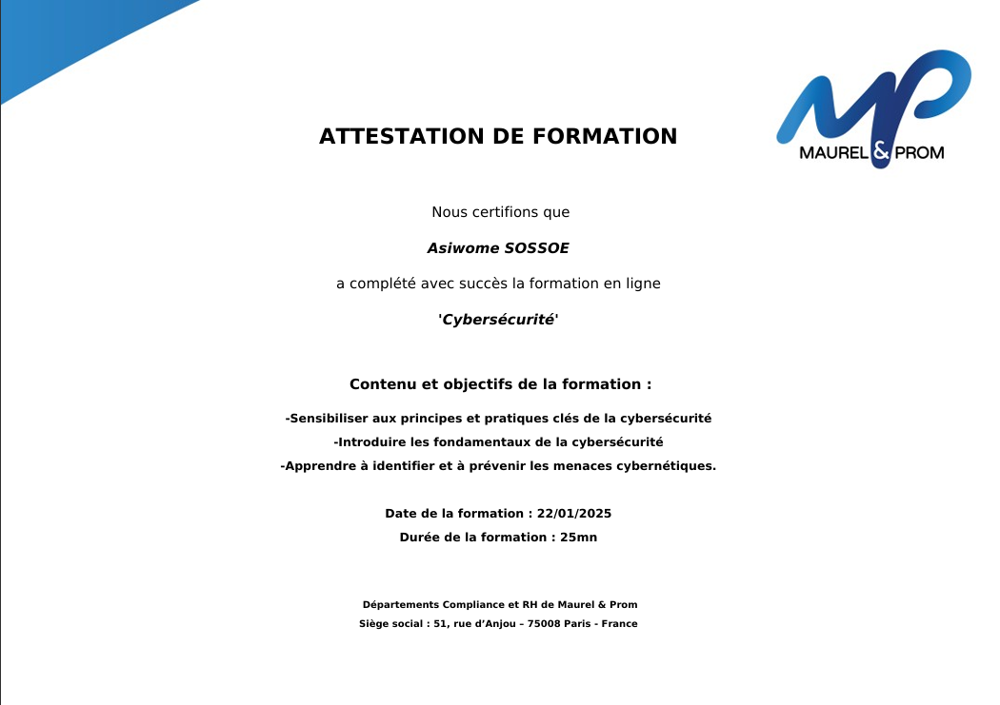
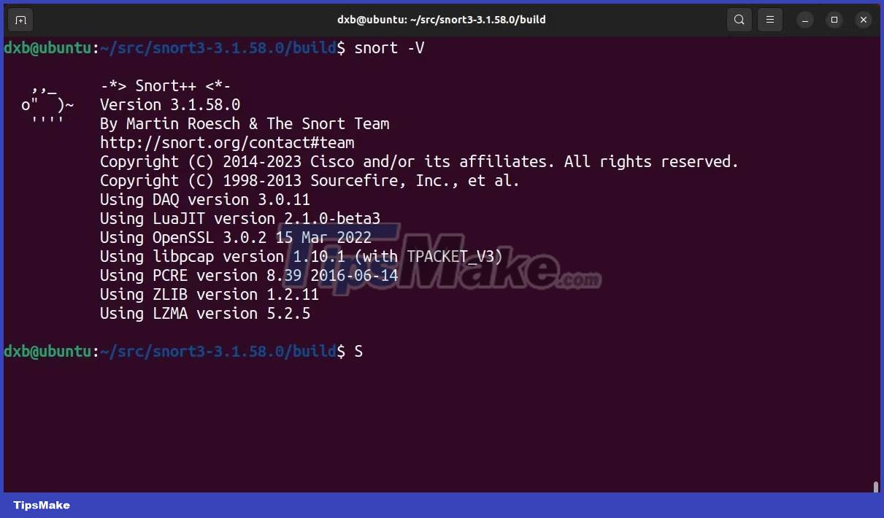
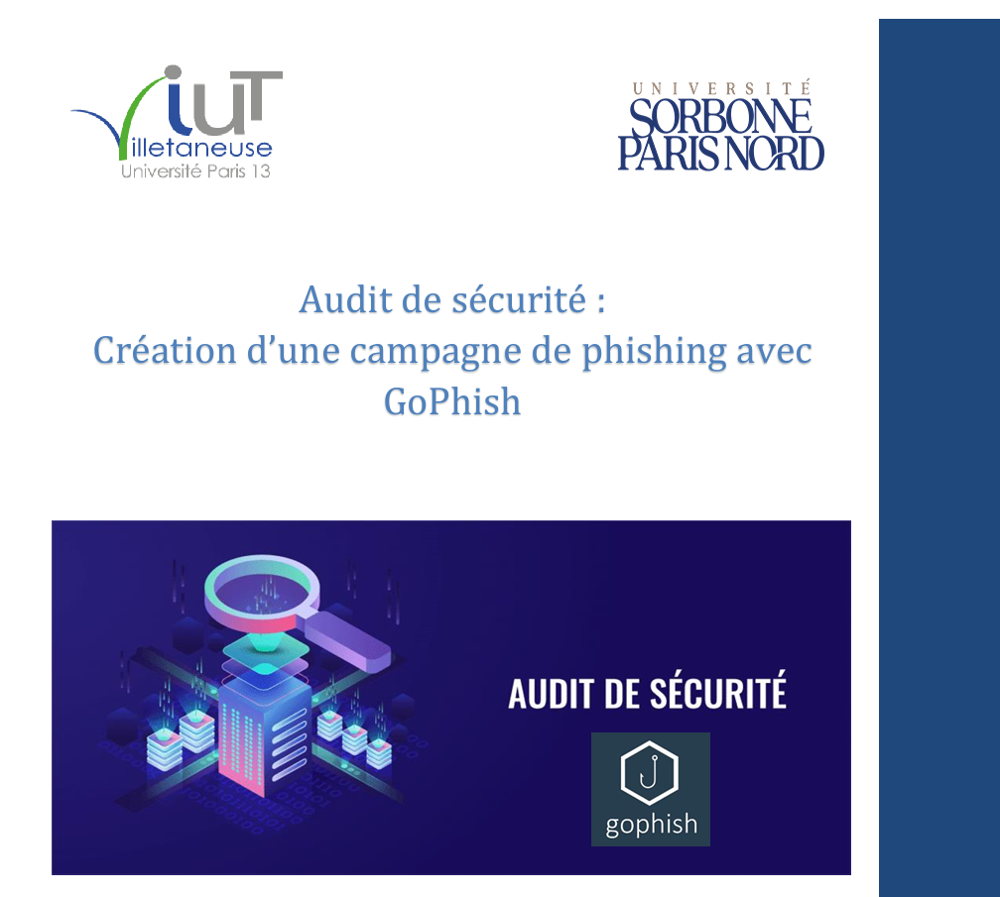

×
Serveur Zentyal
Projet scolaire pendant la semaine de professionnalisation : configuration d’un serveur Zentyal pour une messagerie d’entreprise dans un environnement simulé. Ce projet m’a permis de comprendre les rouages des services réseau.
.png )
Je m’appelle Mario Sossoe, passionné par la cybersécurité et les réseaux. Mon parcours, depuis mon arrivée en France jusqu’à mon inscription en master cybersécurité à l’IPSSI, a été jalonné de découvertes, de défis et d’apprentissages passionnants. Avec une solide formation en Réseaux et Télécoms et des expériences professionnelles concrètes (analyste SOC, pentest, gestion des vulnérabilités), j’ai consolidé mes compétences et développé une véritable expertise dans la sécurisation des systèmes d’information. À travers ce portfolio, je vous invite à découvrir mes projets académiques, mes expériences professionnelles et mes ambitions pour l’avenir.
Découvrir mon parcoursSpécialisation en cybersécurité et télécommunications. Projets académiques concrets (IDS, serveurs, pentest). Développement d’une expertise solide et d’une compréhension avancée des réseaux et systèmes.
Approfondissement des connaissances en systèmes d’exploitation (Linux, Windows), virtualisation, et sécurité des réseaux. Initiation à la gestion de projet et aux bonnes pratiques en cybersécurité.
Formation générale avec un focus sur les sciences, préparant à l’enseignement supérieur en informatique et télécoms.
Cliquez pour en savoir plus.
Cliquez pour en savoir plus.
Durant ce stage, j’ai participé à l’implémentation et la configuration d’un serveur NAS pour centraliser les données d’une PME, à la conception d’un réseau sécurisé avec configuration de routeurs, switches et points d’accès. Outils : Cisco, Debian, VirtualBox. Ce projet m’a permis d’apprendre à travailler en équipe et à garantir la sécurité et la fiabilité d’un réseau.
Intégré au SOC, j’ai participé à l’analyse des alertes, à la gestion des vulnérabilités (outils : CrowdStrike, ManageEngine), et à des tests d’intrusion (Metasploit, Nessus). Ce stage m’a confronté à la réalité du terrain, m’a permis de développer mes capacités d’analyse et d’appliquer mes connaissances en cybersécurité avec rigueur et éthique.
Cliquez pour découvrir ce projet !
Cliquez pour découvrir ce projet !
Cliquez pour découvrir ce projet !
Cliquez pour découvrir ce projet !
Projet académique lors de la semaine de professionnalisation : mise en place d’un IDS avec Snort, d’abord via Pfsense, puis sur un serveur Ubuntu dédié. Ce projet m’a permis d’apprendre la configuration des règles de détection et la surveillance du trafic en temps réel.
Projet scolaire pendant la semaine de professionnalisation : configuration d’un serveur Zentyal pour une messagerie d’entreprise dans un environnement simulé. Ce projet m’a permis de comprendre les rouages des services réseau.
Conception d’un système d’authentification sécurisé avec Pfsense, RADIUS et MySQL, pour simuler l’intégration d’un réseau sécurisé. Ce projet m’a permis de mettre en pratique les notions de sécurité réseau et d’authentification centralisée.
.png)
Projet académique supervisé : simulation d’une campagne d’hameçonnage avec Gophish, en usurpant l’identité de l’école. Ce projet m’a permis de découvrir les techniques de phishing et d’en comprendre l’impact et les mesures préventives.
Mon ambition est de devenir un acteur clé dans le domaine de la cybersécurité. Je suis actuellement inscrit en Master Cybersécurité à l’IPSSI, que je poursuis en alternance afin de mettre en pratique mes compétences et d’acquérir une expérience concrète. Mon objectif est de devenir analyste cybersécurité ou de rejoindre un SOC pour contribuer activement à la protection des systèmes d’information.
À moyen terme, je vise le poste de **Responsable Sécurité des Systèmes d’Information (RSSI)**, où je pourrai coordonner les stratégies de sécurité, accompagner les équipes, et anticiper les menaces pour garantir la résilience des organisations.
Je suis motivé par les défis, passionné par les technologies, et prêt à évoluer constamment pour répondre aux enjeux de demain.